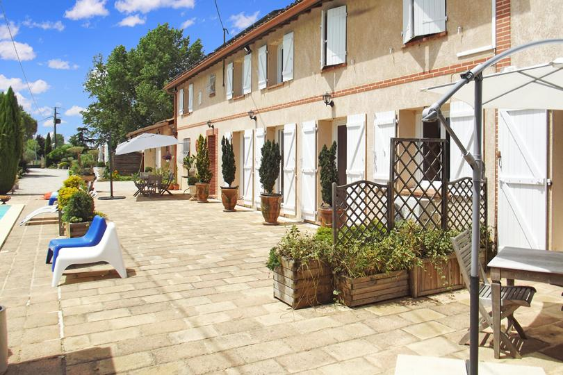

Accueil›Questions fréquentes
Domaine des Six à Lherm : tarifs, piscine, ouverture – FAQ

Accueil›FAQ
Questions fréquentes
Tout savoir sur le Domaine des Six : localisation, hébergements, événements, tarifs et réservation.
Où se situe le Domaine des Six ?
Le Domaine des Six se trouve au Bégué, 31600 Lherm, en Haute-Garonne (Occitanie), à 20 minutes au sud de Toulouse et à 11 km de Muret, au cœur du Sud-Toulousain, proche de l'autoroute A64.
Quand le Domaine des Six ouvre-t-il ?
Le domaine ouvre à la mi-janvier 2027. Les pré-réservations et les demandes de devis (séjours, mariages, séminaires, retraites) sont d'ores et déjà possibles.
Quels types d'hébergements propose le domaine ?
Cinq logements indépendants : deux T3 (Amazone, Libération), deux studios (Ora, Sens) et une love room (Désir), pour accueillir jusqu'à 15 personnes.
Combien de personnes peut-on accueillir ?
Jusqu'à 15 personnes en hébergement sur place, réparties dans les cinq logements. Pour les réceptions en journée, la capacité d'accueil est plus élevée selon la formule.
Y a-t-il une piscine et quels sont les équipements ?
Oui : une piscine extérieure plein sud avec plages solarium, un parc arboré de 4 600 m² (oliviers, arbres fruitiers), un pool house, un kiosque, une paillote, un parking privé et une vue sur les Pyrénées.
Peut-on organiser un mariage ou une réception ?
Oui. Le domaine accueille mariages et réceptions, en intérieur comme en plein air, avec l'avantage de l'hébergement sur place pour les invités.
Le domaine convient-il aux séminaires d'entreprise ?
Oui, le cadre nature à 20 minutes de Toulouse est idéal pour les séminaires, journées d'étude et team building, avec espaces de travail, détente et hébergement de groupe sur place.
Peut-on y organiser une retraite yoga ou bien-être ?
Oui. Le domaine se privatise pour les retraites yoga, méditation et bien-être : espaces calmes, parc et piscine.
Quels sont les tarifs ?
Les hébergements vont de 55 €/nuit (basse saison) à 200 €/nuit en haute saison. Les prestations (mariage, séminaire, retraite, privatisation) font l'objet d'un devis personnalisé.
Les animaux sont-ils acceptés ?
Oui, les animaux sont acceptés. Merci de nous le préciser lors de votre demande.
Comment réserver et quelles sont les conditions ?
La réservation devient effective après versement d'un acompte de 30 % et confirmation écrite, le solde étant réglé à l'arrivée. Pour réserver : 06 98 20 02 08 ou francois.leterrier.cmw@gmail.com.
Quels sont les horaires d'arrivée et de départ ?
Arrivée à partir de 16 h, départ avant 11 h. D'autres horaires peuvent être convenus selon les disponibilités.
À quelle distance se trouve Toulouse ?
Le domaine est à environ 20 minutes au sud de Toulouse, à 11 km de Muret et proche de l'A64 — facilement accessible tout en restant au calme.
Ouverture mi-janvier 2027
Réservez votre séjour
Dites-nous vos dates : nous vous répondons personnellement.
Demander mes datesTéléphone 06 98 20 02 08 · francois.leterrier.cmw@gmail.com
Ouverture mi-janvier 2027
Réservez votre séjour
Dites-nous vos dates : nous vous répondons personnellement.
Demander mes datesTéléphone 06 98 20 02 08 · francois.leterrier.cmw@gmail.com